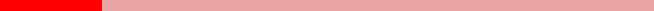

Doctor STRANGE
O doutor Stephen Vincent Strange, mais conhecido como Doutor Estranho, é um super-herói que aparece nos quadrinhos publicados pela Marvel Comics. Serve como o Mago Supremo, o principal protetor da Terra contra ameaças mágicas e místicas.
